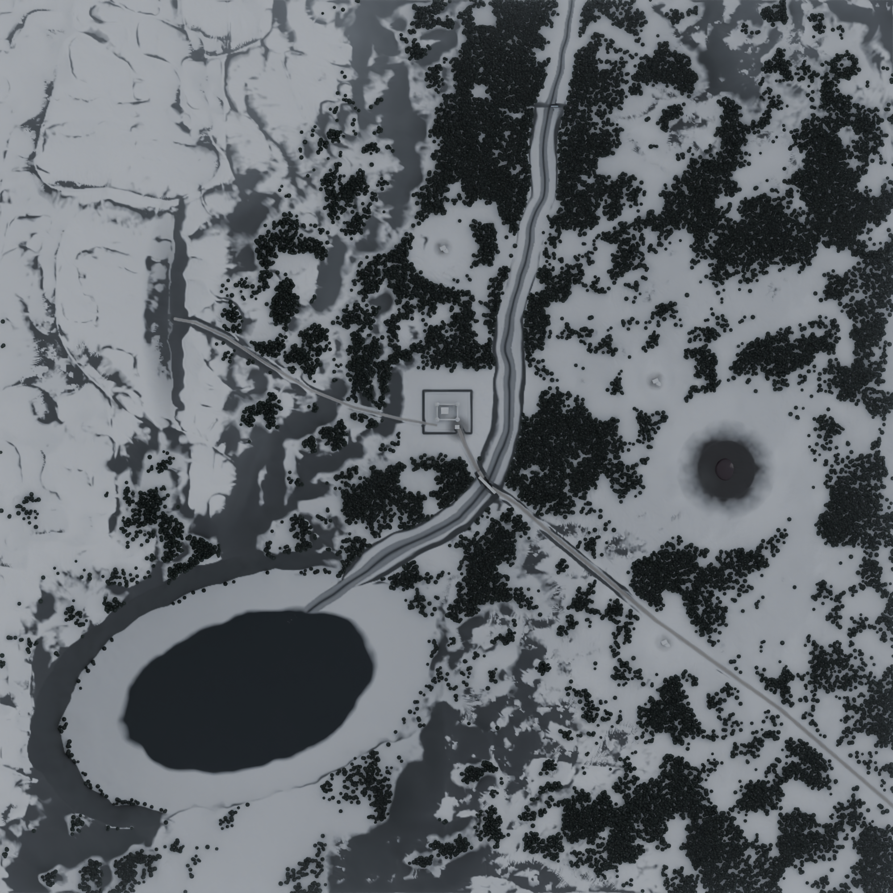
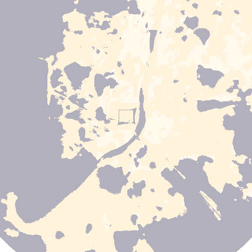

WINTERKEEP (castle, 62 m)
Bridge: chokepoint 1
Frozen lake: chokepoint 2 (ice)
Mine in the iced cliff (#201)
Frozen waterfall
Avalanche gully
Tentacle realm: melt zone, steam
Farm East (survivors #11)
Farm Road (survivors #11)
Farm North (survivors #11)
Player first view
Deep-drift field: chokepoint 3 (slow)
Wind from NW (315°)
400 m
N ↑
WinterKeep 2 × 2 km
(#390)
gate road / mine road
frozen river
zombie approach routes
seen from the towers
dead ground (walls blind)